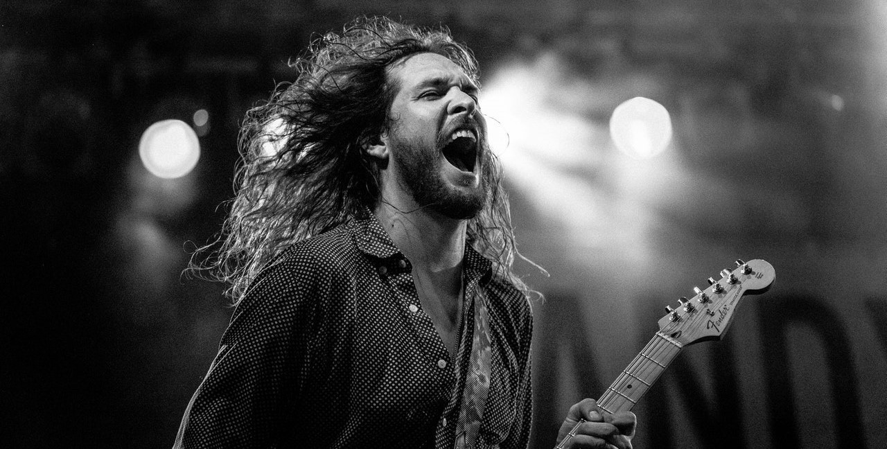

Damian Foster
Le 6 Juin 2022 au Garden Café à Lyon.3 ans après sa tournée sold out qui avait réuni plus de 500 000 spectateurs, Damian Foster revient pour une tournée évènement en France.
Retrouvez ici nos idées de sorties, de lieux à découvrir, d'expos à ne pas rater, d'événements festifs où retrouver vos amis... on vous propose quelques bons plans pour profiter pleinement de la vie à Lyon et dans la métropole !
3 ans après sa tournée sold out qui avait réuni plus de 500 000 spectateurs, Damian Foster revient pour une tournée évènement en France.

Avec le succès de son dernier album « Dive » certifié disque de platine en moins de 2 mois, Shift revient pour une tournée des...

Debra Bishop, étoile montante du jazz vocal, présente son album « Soul Quest », un premier opus de chansons originales où elle révèle l’étendue de...

Ed & Viola Hawk, deux artistes que le destin a décidé de réunir le temps d’un album duo.